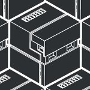
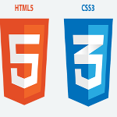
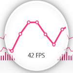
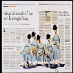
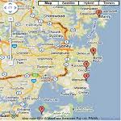

demeloWEBdevelopment
- 
Phone Gap
PhoneGap is a free and open source framework that allows you to create mobile apps using standardized web APIs for the platforms you care about.
Jquery Mobile
jQuery Mobile: Touch-Optimized Web Framework for Smartphones & Tablets
jquery
jQuery is a fast, small, and feature-rich JavaScript library.
Adobe edge animate
Create animated, interactive content for modern browser
Adobe Master Collection CS6
Explore groundbreaking ways to design for tablets and smartphones, speed up image editing, enhance high-end motion
Full tragedy productions
Digital sound, video and light control - Spetacle composition
- 
html5-css3
HTML provides the structure of the page, CSS the (visual and aural) layout, for a variety of devices.
Google Maps Api
Aplication programin interface to work with web maps
Kendo ui
Kendo UI has all the tools you need in a unified, tested, and supported HTML5/JavaScript framework.
- 
Data visualization
Leverage cutting-edge HTML5-based DataViz widgets to create charts
- 
CSS3 exclusions
be able to build layouts that allow inline content to flow into and/or around circles or other, arbitrarily complex shapes.
- 
Geo location API
It allows you to figure out where your users are and then provide them information about what's around them.
Google charts api
Display live data on your site
HTML5 Mobile Web Applications
building a mobile HTML5 web app that will work across multiple devices
API Google places
location-based app with the Google Places API, which can be used to find detailed information about places across a wide range of categories.
sencha touch
HTML5 Mobile App Development
Cross-platform development
supporting iOS, Android, Mac and Windows operational systems
sass
Sass is a meta-language on top of CSS that’s used to describe the style of a document cleanly and structurally
javascript-css3-html5
open source web development languages
javascript
Nor can the tongue of him who loved him least
Google Street View Image API
The Google Street View Image API lets you embed a static (non-interactive) Street View panorama or thumbnail into your web page,
Jquery and CSS3 visual effects
Visual effects and animation for mobile and desktop web applications
jquery ui
jQuery UI is a curated set of user interface interactions, effects, widgets, and themes built on top of the jQuery JavaScript Library.

theme-rollerer
themeroller for jquery mobile